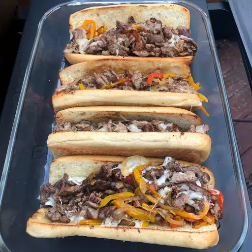

Philly Cheese Steak

Description
This particular recipe is an Asian-inspired version of the infamous cheese steak. Thinly sliced steak is cooked with delicious onions (mmmmmm), cheese spread, and a splash of teriyaki sauce, served on sandwich rolls. You could literally have a full course meal with just the bread.
Ingredients
- 1 pound fresh steak (rib-eye, round, or sirloin)
- 1 large yellow onion, sliced thin
- 3 tablespoons Kikkoman Teriyaki Marinade & Sauce
- 4 soft sandwich rolls
- 1 (8 fl oz) jar cheese spread
Steps
- Add oil to a large non-stick skillet.
- Saute onions and 2 tablespoons of teriyaki sauce until the onions are soft.
- Add the sliced meat and cook until meat browns slightly, add remaining 1 tablespoon of teriyaki sauce and stir to combine.
- Place cheese on the meat and stir until melted, mixing meat, onions and cheese together. Scoop meat mixture onto sandwich rolls.